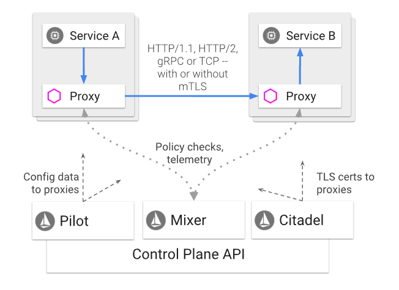

# oc whoami
system:adminService Mesh & Istio
Table of Contents
概念
什么是 Service Mesh，为什么需要它
Service Mesh 是指由微服务应用及其之间交互构成的一个微服务网络。随着服务网格的大小和复杂性的增加，理解和管理变得更加困难。 其要求可包括：
-
服务发现（Discovery）
-
负载平衡（Load balancing）
-
故障恢复（Failure recovery）
-
指标（Metrics）
-
监控（Monitoring）
服务网络通常还具有更复杂的操作要求，如 A/B 测试（A/B testing），金丝雀发布（Canary releases），速率限制（Rate limiting），访问控制（Access control）和端到端身份验证（End-to-end authentication）。
Istio 作为一个整体提供对 Service Mesh 的行为洞察和操作控制，提供完整的解决方案，以满足微服务应用的各种要求。 它在服务网络中统一提供了许多关键功能：
-
Traffic Management - 控制服务之间的流量和 API 调用流，使调运更可靠，并在面对不利条件时使服务网络更加健壮。
-
Observability - 了解服务之间的依赖关系以及它们之间负载的性质和流量，提供快速识别问题的能力。
-
Policy Enforcement - 将组织策略应用于服务之间的交互，确保实施访问策略，并在消费者之间公平地分配资源。 通过配置服务网格而不是通过更改应用程序代码来进行策略更改。
-
Service Identity and Security - 在网格中提供具有可验证身份的服务，并提供在流经不同可信度的网络时保护服务流量的能力。
除了这些行为之外，Istio 提供扩展点，以扩展以满足不同的部署需求：
-
支持的平台 - Istio 设计旨在运行在各种环境中，包括云，内部部署，Kubernetes，Mesos 等。目前专注于 Kubernetes，但很快就会支持其它环境。
-
集成与自定义 - 策略实施组件可以扩展和定制，以与现有的ACL，日志记录，监控，配额，审计等解决方案集成。
这些功能极大地减少了应用程序代码，底层平台和策略之间的耦合。 这种减少的耦合不仅使服务更容易实现，而且使操作人员更容易在环境之间移动应用程序部署或新的策略方案。 因此，应用程序本身更具可移植性。
流量管理模型
使用 Istio 的流量管理模型实质上解耦了流量和基础设施扩展，让运营平台通过 Pilot 指定他们希望流量遵循的规则，而不是哪些特定的 pod/VM 应该接收流量 - Pilot 和智能 Envoy 代理负责其余部分。例如，您可以通过 Pilot 指定您希望特定服务的 5％ 流量转到金丝雀版本，而不管金丝雀部署的大小，或根据请求的内容将流量发送到特定版本。
Istio 工作模型

一个 Istio 服务网络在逻辑上被分成 Data plane 和 Control plane：
-
Data plane 由一组和微服务部署在一起的智能代理（Envoy）组成。这些代理和 Mixer（通用政策和遥测中心）调解和控制微服务之间的所有网络通信。
-
Control plane 管理和配置代理以路由流量。此外，控制平面配置 Mixer，以实施策略及远程收集。
Istio 组件
| 名称 | 描述 |
|---|---|
Envoy |
Envoy 是一个用 C++ 开发的高性能代理，用于调解服务网格中所有服务的所有入站和出站流量。Istio 利用 Envoy 的许多内置功能，例如:
Envoy 相同的 Kubernetes POD 中作为相关服务的代理部署。此部署允许Istio将有关流量行为的大量信号作为属性提取。 反过来，Istio 可以在 Mixer 中使用这些属性来强制执行策略决策，并将它们发送到监视系统以提供有关整个网格行为的信息。 |
Mixer |
Mixer是一个独立于平台的组件。Mixer 在服务网格中实施访问控制和使用策略，并从 Envoy 代理和其他服务收集遥测数据。代理提取请求级别属性，并将它们发送到 Mixer 进行评估。 Mixer 包括灵活的插件模型。此模型使 Istio 能够与各种主机环境和基础架构后端进行交互。因此,Istio从这些细节中抽象出 Envoy 代理和 Istio 管理的服务。 |
Pilot |
Pilot 为 Envoy 代理提供服务发现，通过流量管理模型为智能路由（例如，A / B测试，金丝雀部署等），以及弹性（超时，重试，断路器等）。 Pilot 将控制流量行为的高级路由规则转换为特定于 Envoy 的配置，并在运行时将它们传播到服务代理。 Pilot 抽象出特定于平台的服务发现机制，并将它们合成为标准格式，任何符合 Envoy Data plane API 的服务代理都可以使用。这种松散耦合允许 Istio 在多个环境（如Kubernetes，Consul或Nomad）上运行，同时为流量管理维护相同的操作员界面。 |
Citadel |
Citadel 通过内置身份和凭证管理提供强大的服务到服务和最终用户身份验证。您可以使用 Citadel 升级服务网格中的未加密流量。使用Citadel，运营商可以根据服务标识而不是网络控制来实施策略。 |
安装 Istio 到 OpenShift
|
Note
|
OpenShift 4.x 版本默认会安装 Istio。 |
1. 确保管理员用户
2. 解压安装包
# tar -xvf istio-1.0.3-linux.tar.gz3. 创建 Custom Resources
# oc apply -f istio-1.0.3/install/kubernetes/helm/istio/templates/crds.yaml4. 安装
# oc apply -f istio-1.0.3/install/kubernetes/istio-demo.yaml5. 创建服务
oc expose svc istio-ingressgateway -n istio-system
oc expose svc servicegraph -n istio-system
oc expose svc grafana -n istio-system
oc expose svc prometheus -n istio-system
oc expose svc tracing -n istio-system6. 添加 Istio 到环境变量
# export PATH=$PATH:/root/istio/istio-1.0.3/bin/
# istioctl version微服务部署
**
**
**
**